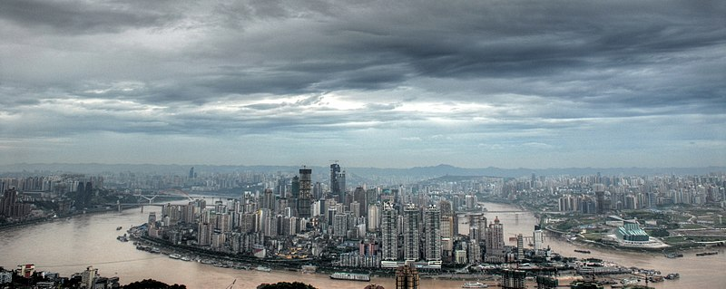
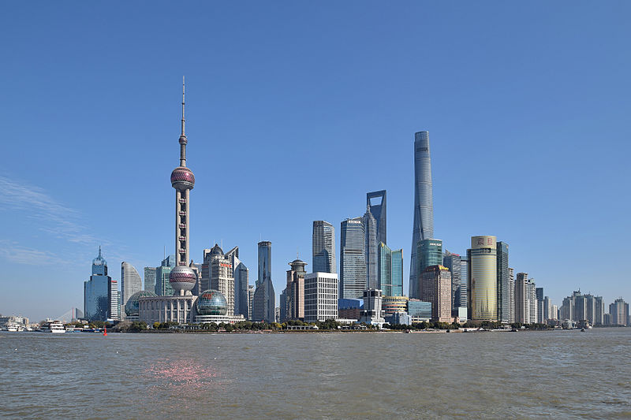
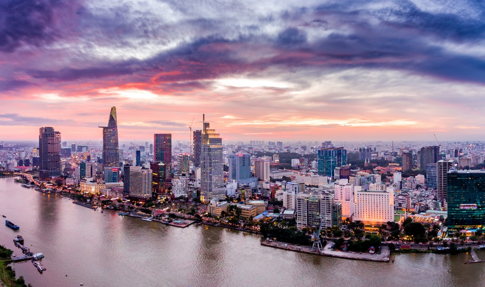
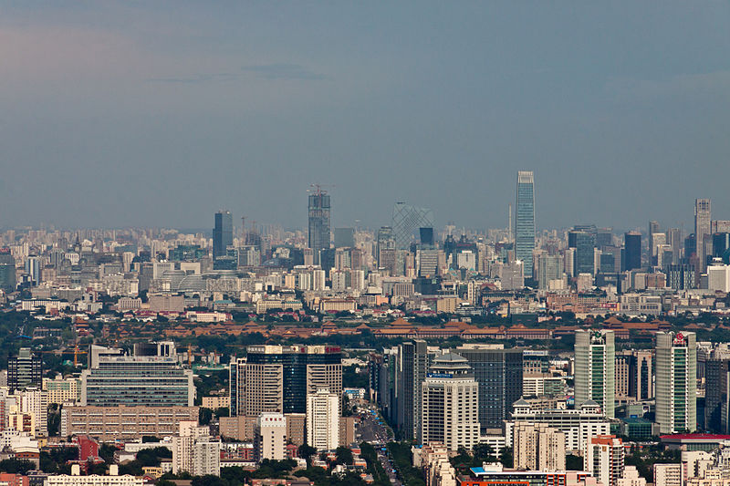
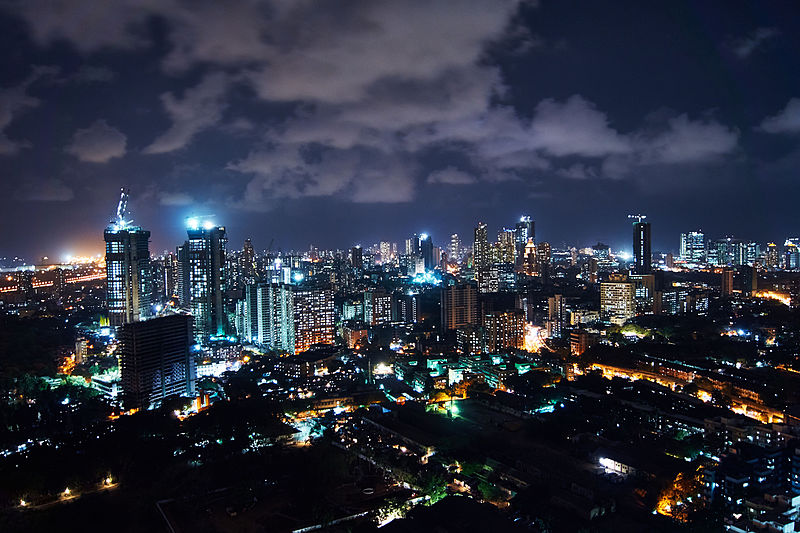
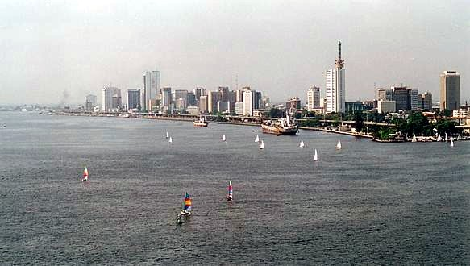
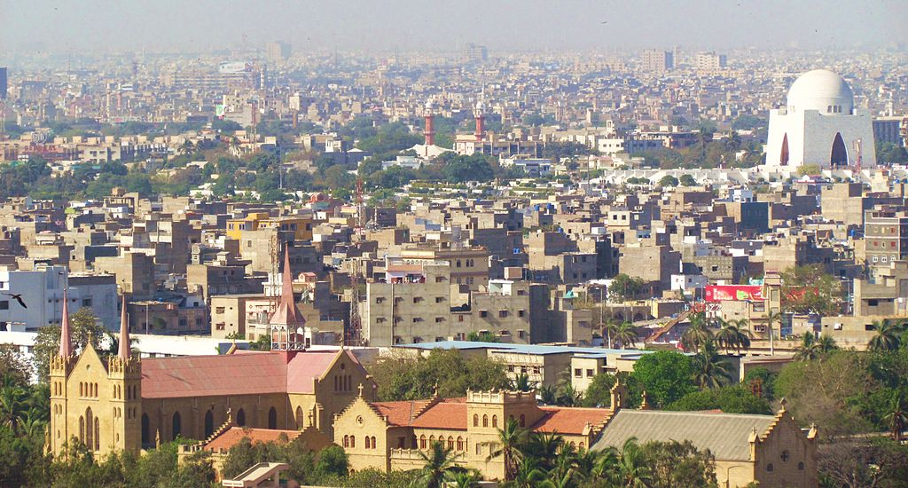
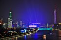
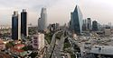

| Number | Image | Description |
|---|---|---|
| 1 |  |
|
| 2 |  |
|
| 3 |  |
a city and a union territory of India |
| 4 |  | the capital of the People's Republic of China, the world's second most populous city proper |
| 5 |  | the capital city of the Indian state of Maharashtra |
| 6 |  | a city in the Nigerian state |
| 7 |  | the capital of the Pakistani province of Sindh |
| 8 |  | the capital and most populous city of the province of Guangdong in southern China |
| 9 |  | the most populous city in what is modern-day Turkey and the country's economic, cultural, and historic center |
| 10 | the capital city of Japan and one of its 47 prefectures |